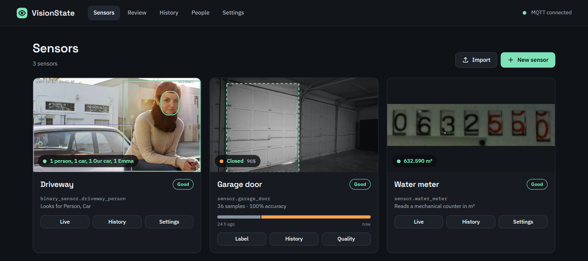

Threads｜VisionState：把既有攝影機變成本地 Home Assistant 感測器，先處理辨識與隱私邊界

AI 极客新闻分享的 [VisionState](https://github.com/oleost/VisionState) 是一個 Home Assistant add-on：把既有攝影機、RTSP／HTTP snapshot 或 ESP32-CAM 的影像，轉為可供自動化使用的感測器。官方 README 主打車庫門開關、物件與人員、以及水／瓦斯／電表讀值，並稱模型在本機 CPU 上運作。
官方文件可確認的工作方式
VisionState 的架構是「攝影機畫面 → 自選區域 → 本地預訓練模型與每感測器的小型分類器 → 防抖與檢核 → MQTT → Home Assistant」。它列出三類感測器：
- **狀態**：以少量範例判斷車庫門開／關、燈是否亮等。
- **物件與人員**：使用 D-FINE 偵測常見物件；可對自己定義的標籤做校正。
- **讀值**：OCR 與專用輪式讀表器讀取水、瓦斯或電錶；README 表示會在發布前檢查計數器不應倒退或跳號。
專案目前要求 Home Assistant OS 或 Supervised（README 註明 2025.10 以上）、Mosquitto MQTT broker 與攝影機。GitHub API 顯示它採 Apache-2.0 授權；這表示程式碼可依授權使用，**不等於**部署時可跳過攝影、臉部與住家資料的法律／家人同意。
「全本地」不等於零風險
作者聲稱影像不離開機器、無遙測；README 也說攝影機密碼會在紀錄中遮蔽。但實際風險仍取決於 Home Assistant、MQTT、備份、網路區隔與攝影機本身的設定。尤其人臉功能雖預設關閉，啟用後會處理高度敏感的生物特徵資料。
建議先把需求分級：車庫門與儀表可優先採「狀態／讀值」；人物與臉部辨識只在確有必要、取得居住者同意並限定可存取設備時啟用。警示自動化也應先做通知與人工確認，避免把單次辨識結果直接接到門鎖、警報或其他高影響動作。
上線前檢核
- 以獨立 VLAN 或最小權限帳號限制攝影機、Home Assistant 與 MQTT 的相互存取。
- 先用不涉及人物的狀態或讀表場景建立基準，記錄日夜、逆光與雨天的誤判率。
- 人臉功能維持關閉；若要開啟，清楚告知受影響者、限制用途並設定備份與刪除規則。
- 對每個自動化加上持續時間、信心門檻與人工覆核；不以單一畫面直接觸發高風險動作。
- 安裝前閱讀專案的 README、SECURITY.md 與更新紀錄；開源與本地運算不取代自己的資安維護。
來源與查核
Threads 的「幾分鐘可教會」是社群貼文的概括說法；本文的感測器類型、模型流程、本地運算、Home Assistant／MQTT 需求、臉部預設關閉與授權資訊，均以 repository README、SECURITY.md 與 GitHub metadata 為準。實際準確度、硬體效能與相容性仍須在自己的裝置與場域測試。